Documentation — — — — — — — —
Powered By Unity!
— — — — — — — —
Geting Your Project Setup With GitHub Desktop
Make sure you have GitHub Desktop installed. You can install it here.
GitHub Desktop Installation: Open Source Journey Towards Simplicity
Hide
1) Open GitHub Desktop and click: file --> clone repository.
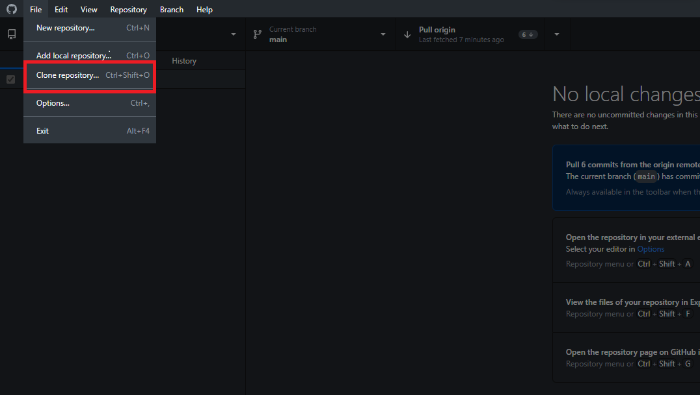2) Navigate to the Github repository. Copy the url. Once done you can paste the url as shown below. Make sure to also select a desired folder location. Then click clone.
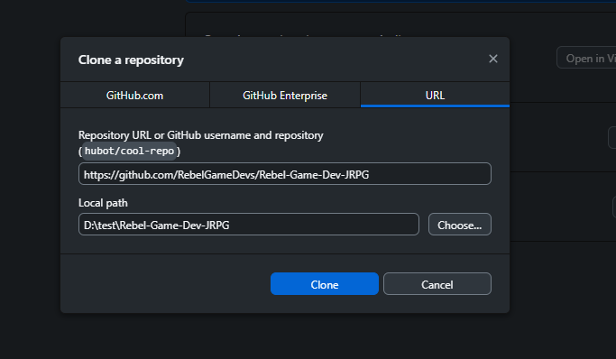Branches
Hide
The Open Source Project has 2 main branches. The "Main Branch" is the entire project which is updated every few weeks (merged from the dev branch). The other branch is the "Dev Branch" which is where you will update your changes to the project.
When working on a small feature or project you can create a personal branch which is tied only to your machine. Below is some instructions on how to achieve creating a personal branch and uploading to the dev branch repo.
Creating Your Own Branch
Hide
Please scroll down or click here see how to get your unity project framework setup before starting this step.
1) Click "Current Branch" and select "Create Branch"
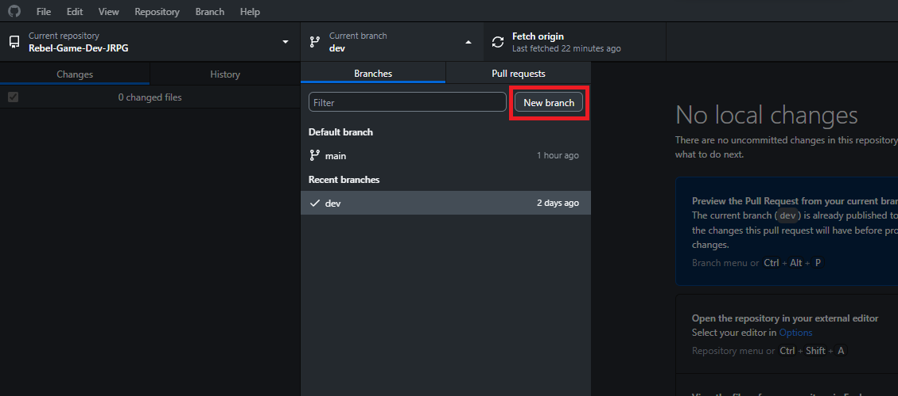2) Pick an name for your branch, personally I use my name. Then select the branch based off of the dev branch. From here you can select "Create Branch". Do not publish your personal branch to repo until you have finished your work for the day or session.
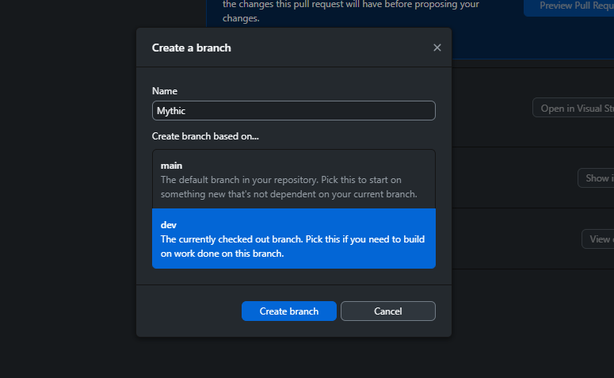For this example I created 1 material in my folder inside the Open Source Project as shown below.
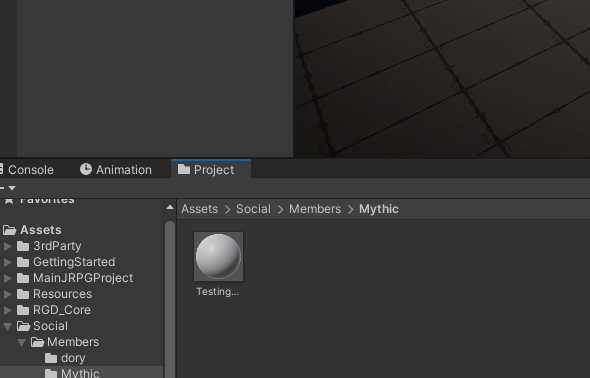Posting Your Changes To Everyone Else
Hide
The really cool thing about the Open Source Project is it's live and active. For everyone else to see your changes, you need to post your changes to the dev branch. So let's see how we can achieve that.
1) Once you are happy with your changes you can review them back in the GitHub Desktop application.
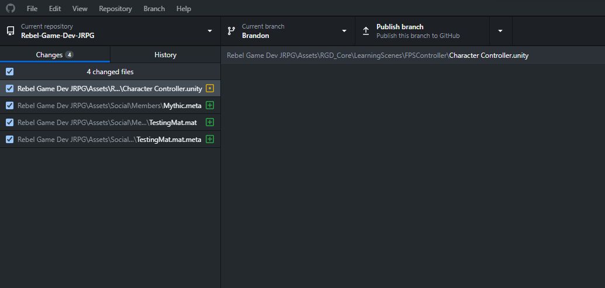2) Next give a "Summary" (like a subject) and a "Description" and click "Commit to (Your Branch Name Here)".
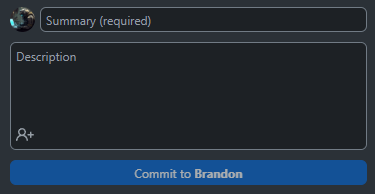3) Then select "Publish Branch".
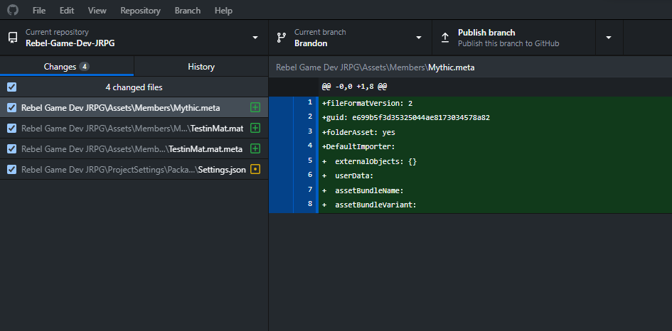4) You can then select preview pull request.
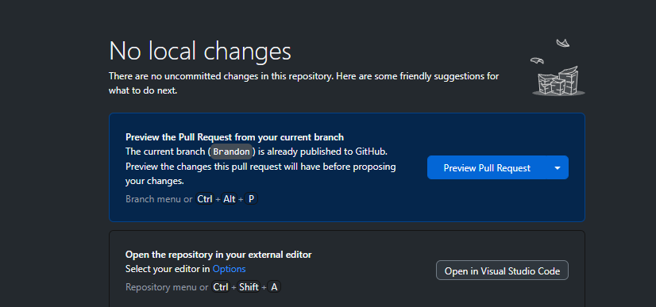5) Finally you can now select the "dev" branch to commit to and then select "Create Pull Request". Now you're done!
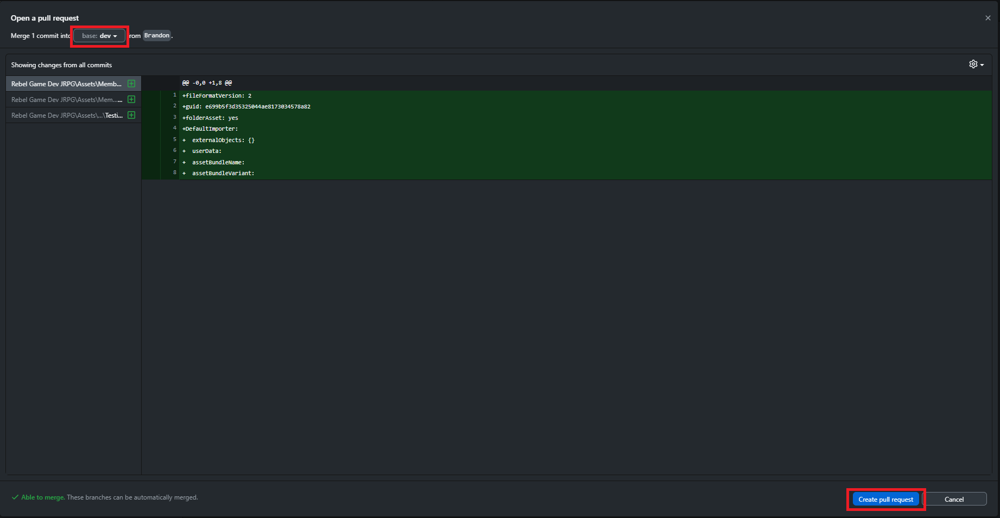How To See Everyone Else's Changes
Hide
To update your project to see everyone's changes you need to open GitHub Desktop. Make sure the current branch says dev branch on the top left. From here you can select fetch origin (sometimes will say pull). NOTE: if you have a personal branch you will not see the changes on there.
Steps To Get Unity Your Unity Project Setup With The Open Source Framework
Make sure you have Unity Hub installed. You can install it here.
Hide
1) Open Unity Hub and select installs. Click install editor and install "Unity 2021.3.24.1f".
If you haven't already please scroll back up to get the GitHub repository setup now.
2) Next navigate yo your project tab. Once you have cloned the git repository, click open ↠ open project from disk. Then select the location where you cloned the project.
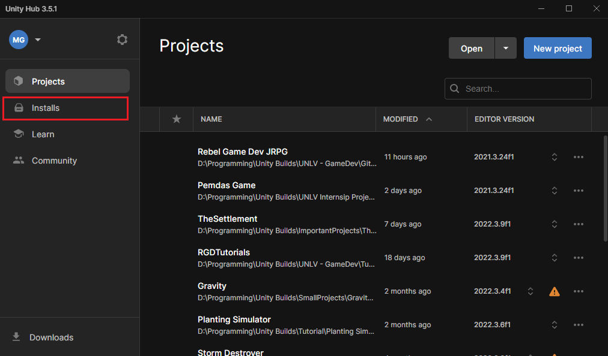Welcome to the RGDs OSP
This is the Rebel Game Devs Open Source Project or RGD-OSP for short. There is a wide variety of documentation covering tools created by officers and members. There is also many different learning scenes, helper methods, and so much more. Please feel free to navigate the website's documentation to learn about these tools.
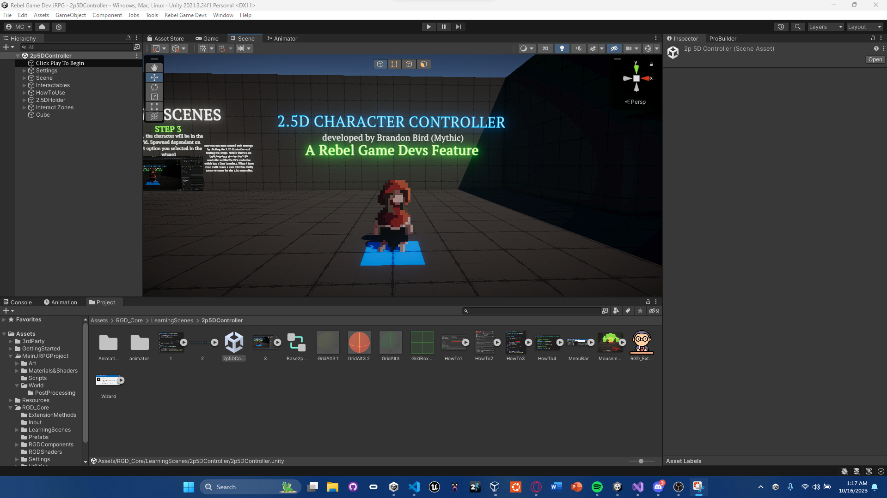Where to start
Unity has so many different tools and windows. There are 3 main windows: Project, Hierarchy, and Inspector.
Project Tab
The project tab inside of Unity is one of the most if not the most important window. The project tab is responsible for holding
your game assets. One important folders is the "Resources Folder". Unity does not come with this installed, but in a fresh project
it is recommended to add it. The Open Source Framework already has one created with some important files. The reason this is so important
is because we use Resources.Load
Hierarchy Tab
The Hierarchy holds all GameObjects and more in the scene. You can think of the Hierarchy in Unity as a parent that is keeping a eye on all of it's children. For instance, if you as a parent knows that your child is in their bedroom, you will look for them in their bedroom. Same thing apply's with the hierarchy. If you as the developer code in your script to find a specific game object you can find them using the hierarchy.
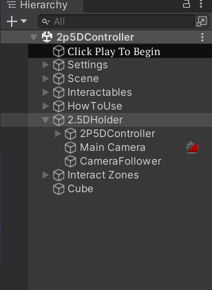Inspector Tab
The Inspector holds all the information regarding the selected Asset/GameObject/File. This is used most often as you are constantly adding/removing scripts, changing data values on your scripts, etc.
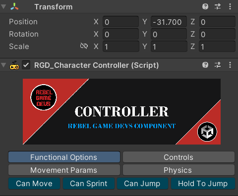